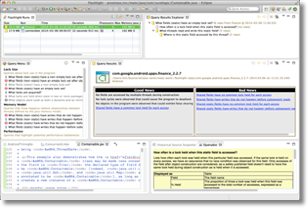

The SureLogic tool suite – For software that matters
Flashlight
Concurrency-focused dynamic analysis tool helping to understand code and find issues from development to operations
JSure
Analysis-based verification tool focused on concurrency and other selected difficult quality attributes (such as nulls)
Sierra
Heuristic static analysis tool ("bug finder") integration with longitudinal (matching findings across time) and team support